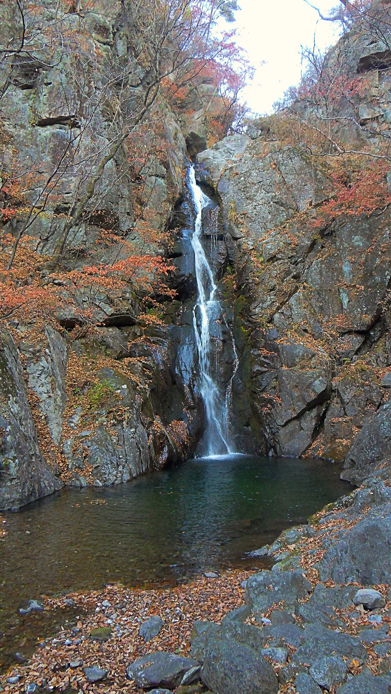
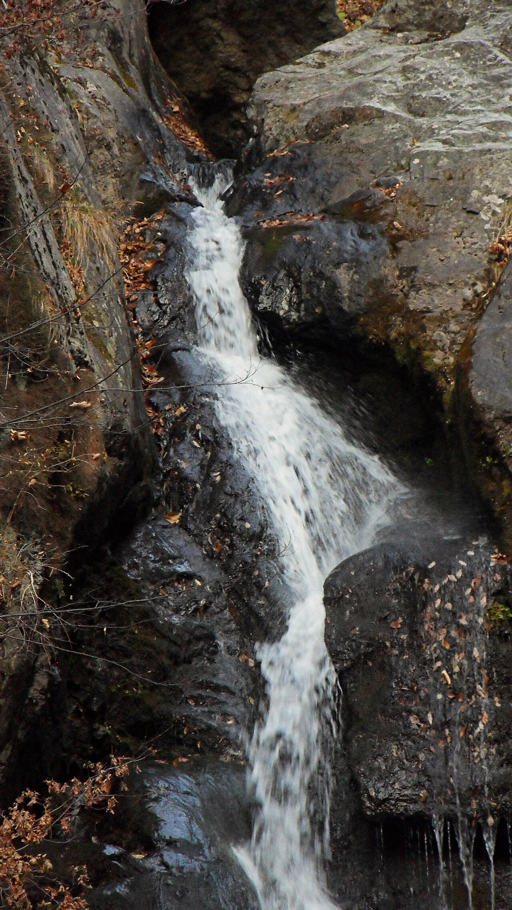
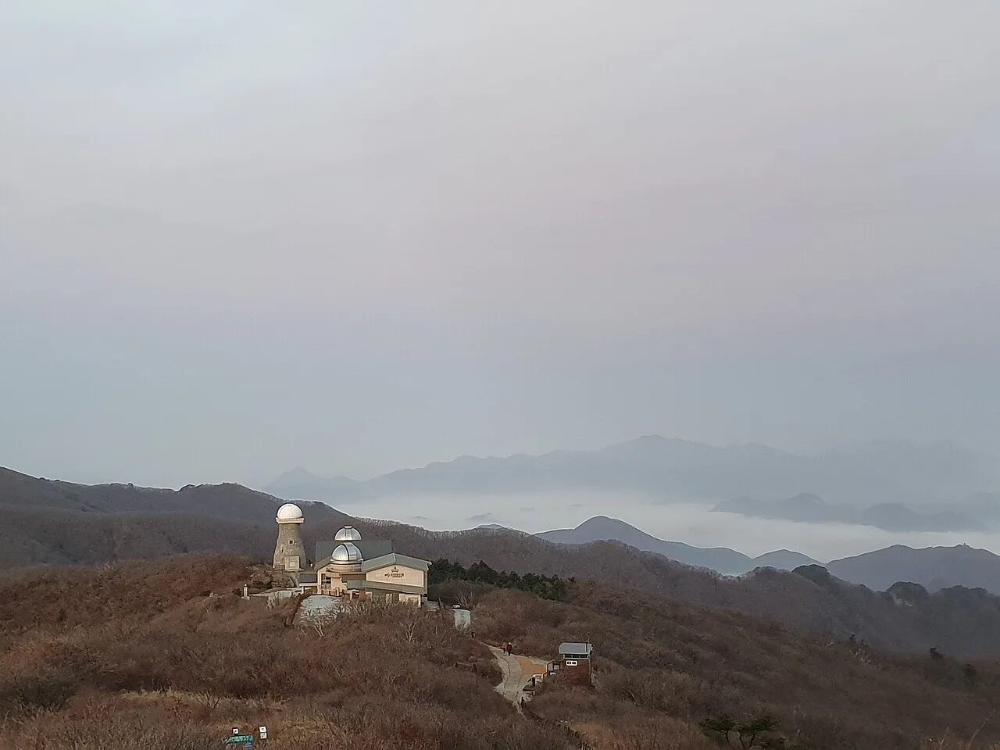
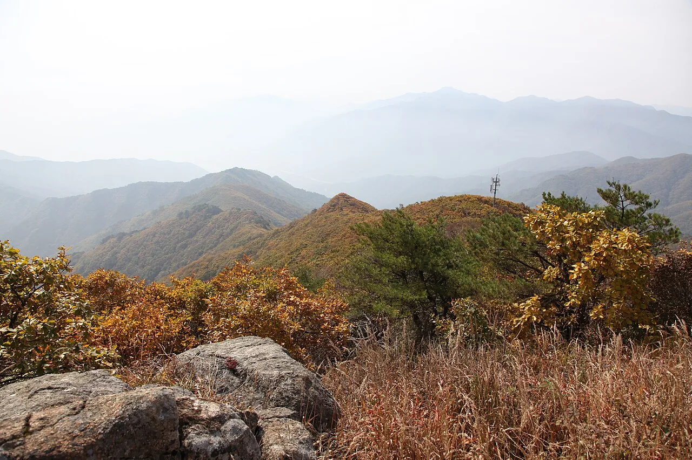
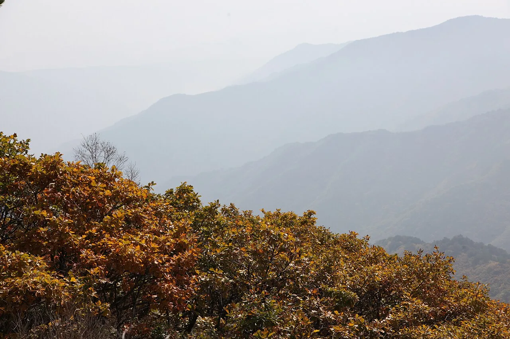
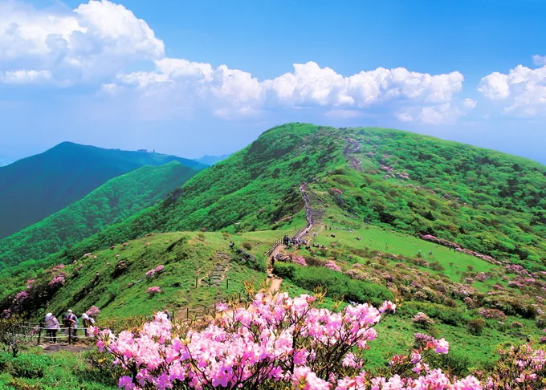

▲ 희방폭포 하단부. 28m 높이의 2단 폭포가 붉게 물든 단풍 사이로 떨어지며 아래 소(沼)를 이룬다. 예로부터 '영남제일폭포'로 불린다
▲ 희방폭포 하단부. 28m 높이의 2단 폭포가 붉게 물든 단풍 사이로 떨어지며 아래 소(沼)를 이룬다. 예로부터 '영남제일폭포'로 불린다 ⓒ Wikimedia Commons
경북 영주시와 충북 단양군에 걸친 소백산국립공원은 1987년 국내 18번째 국립공원으로 지정됐다. 면적 322.011㎢로 지리산·설악산·오대산 다음으로 넓은 산악형 국립공원이며, 백두대간 능선을 따라 비로봉(1,439.5m)·국망봉(1,420.8m)·연화봉(1,383m)·도솔봉(1,314.2m)이 이어진다. 그중 희방탐방지원센터에서 희방폭포와 희방사를 지나 연화봉 정상까지 오르는 희방사 코스는 왕복 7.4km, 약 3시간 30분 거리로 폭포·고찰·천문대를 한 번에 볼 수 있어 가을철 대표 단풍 코스로 꼽힌다. 코스 정보와 단풍 시기, 연화봉의 소백산천문대, 죽령 옛길 연계 코스까지 정리했다.
1. 왜 지금 소백산인가 — 예년 기준 10월 중순~하순이 절정
소백산의 단풍은 예년 기준 10월 중순부터 하순 사이 절정을 이루는 것으로 알려져 있다. 영주시 공식 관광 정보에서도 "소백산 단풍은 10월 중순이 절정"이라고 안내한다. 다른 산과 달리 화려하게 타오르기보다 은은하고 곱게 물드는 것이 특징으로, 정상부 능선을 뒤덮은 철쭉·진달래 군락과 신갈나무 활엽수림이 주황빛과 갈색이 섞인 독특한 색감을 만든다. 다만 절정 시기는 그해 기온과 강수량에 따라 매년 1~2주 정도 앞뒤로 바뀔 수 있어, 방문 직전에는 국립공원공단이나 지자체의 최신 단풍 소식을 확인하는 편이 안전하다.
2. 코스 안내 — 희방사 코스 vs 죽령 코스

▲ 희방폭포 전체 모습. 물줄기가 두 단으로 나뉘어 떨어지며 단풍이 절벽을 붉게 감싼다 ⓒ Wikimedia Commons
연화봉으로 오르는 대표 코스는 경북 영주 쪽 희방사 코스와 충북 단양 쪽 죽령 코스 두 가지다. 희방사 코스는 희방탐방지원센터에서 희방폭포(1.4km, 약 30분)를 지나 희방사를 거쳐 연화봉(추가 2.3km, 약 1시간 30분)까지 오르는 구간으로, 편도 3.7km에 경사가 가팔라 상급 코스로 분류된다. 반면 죽령 코스는 죽령매표소(죽령휴게소)에서 연화봉까지 7km, 약 2시간 30분이 걸리지만 경사가 완만해 상대적으로 수월하게 오를 수 있다.
| 코스 | 구간 | 거리(편도) | 소요시간(편도) | 난이도 |
|---|---|---|---|---|
| 희방사 코스 | 희방탐방지원센터 → 희방폭포 | 1.4km | 약 30분 | 상급(급경사) |
| 희방폭포 → 희방사 → 연화봉 | 2.3km | 약 1시간 30분 | ||
| 죽령 코스 | 죽령매표소 → 연화봉 | 7km | 약 2시간 30분 | 중급(완만) |
코스 이용 팁
- 희방사 코스 왕복은 7.4km, 약 3시간 30분이 기준이며 급경사 구간이 있어 등산화 착용이 필요하다
- 죽령 코스는 완만하지만 편도 7km로 거리가 길어 왕복 시 체력 안배가 필요하다
- 희방사 코스로 올라 죽령 코스로 내려오는(또는 반대) 종주 코스도 가능하지만, 하산 후 대중교통이 불편해 차량 회수 계획을 미리 세워야 한다
3. 희방폭포와 희방사 — 영남제일폭포와 천년 고찰

▲ 희방계곡 상류의 작은 폭포 구간. 크고 작은 소(沼)와 여울이 이어지며 가을에는 노각나무·단풍나무가 계곡을 붉게 물들인다 ⓒ Wikimedia Commons
높이 28m의 2단 폭포인 희방폭포는 연화봉에서 발원한 물줄기가 희방계곡을 따라 흐르다 절벽 아래로 떨어지며 만들어진다. '영남에서 제일가는 폭포'라는 뜻에서 영남제일폭포로도 불리며, 노각나무 군락이 있는 희방계곡과 함께 소백산 단풍 탐방의 으뜸 명소로 꼽힌다. 폭포 위쪽으로 구름다리를 건너면 신라 선덕여왕 12년(643년) 두운조사가 창건한 고찰 희방사가 자리한다. 국내 최초의 한글 불교 대중서인 월인석보 목판을 보관했던 사찰로 알려져 있으며, 아담한 경내에서 잠시 쉬어가기 좋다.
4. 연화봉과 소백산천문대 — 구름 위의 관측소

▲ 제2연화봉에서 바라본 소백산천문대. 흰 돔 두 개가 능선 위에 자리하고, 발아래로 운해가 펼쳐진다 ⓒ Wikimedia Commons
연화봉(1,383m) 정상 인근에는 한국천문연구원이 운영하는 소백산천문대가 있다. 1985년 설립된 국내 최초의 현대식 산악 천문대로, 낮 시간에는 일반 방문객을 대상으로 주간 견학을 운영한다. 주간 견학은 오후 1시부터 4시까지 30분 간격으로 진행되며 망원경 등 관측 시설을 둘러보고 천문우주과학에 대한 설명을 들을 수 있다. 날씨가 맑은 날에는 150mm 쌍안경과 150mm 굴절망원경으로 행성·성단·성운을 관측하는 야간관측 프로그램도 운영하지만, 흐리거나 비가 오면 운영이 취소될 수 있어 사전 예약과 당일 확인이 필수다.

▲ 연화봉 인근 능선에서 바라본 가을 소백산. 주황빛으로 물든 관목 사이로 백두대간 능선이 첩첩이 펼쳐진다 ⓒ Wikimedia Commons
소백산천문대 견학 안내는 한국천문연구원 홈페이지에서 확인 가능
5. 탐방 정보 — 입장료·운영시간·주차·문의

▲ 소백산 정상부 능선을 뒤덮은 가을 관목 단풍. 예년 기준 10월 중순~하순이 절정이다 ⓒ Wikimedia Commons
소백산국립공원은 다른 국립공원과 마찬가지로 입장료가 무료다. 다만 하절기(4~10월) 기준 새벽 4시부터 오후 2시까지만 입산이 가능하도록 시간이 제한돼 있어, 왕복 3시간 30분이 걸리는 희방사 코스는 늦어도 오전 중에는 출발해야 여유 있게 하산할 수 있다. 산불조심기간이나 기상 악화 시에는 탐방로가 통제될 수 있으므로 방문 전 국립공원공단 예약시스템이나 관할 사무소에 확인하는 것이 좋다.
| 구분 | 내용 |
|---|---|
| 입장료 | 무료 |
| 입산 가능 시간(하절기 4~10월) | 04:00~14:00 |
| 주차 | 희방탐방지원센터 주차장 이용(요금·규모는 방문 전 확인 권장) |
| 문의 | 소백산국립공원사무소(영주) 054-630-0700 / 북부사무소(단양) 043-423-0708 |
탐방로 통제·예약 현황은 국립공원 예약시스템에서 확인 가능
6. 죽령 옛길과 연계 코스

▲ 소백산 능선의 데크 탐방로. 완만한 초원형 능선이라 나무데크 구간이 길게 이어진다 ⓒ 경북일보
충북 단양군 대강면에 위치한 죽령은 신라 아달라왕 5년(158년) 개척된 것으로 전해지는 고갯길로, 조선시대에는 한양과 영남을 잇는 주요 관도(영남대로)의 일부였다. 지금의 죽령 옛길은 문화체육관광부가 선정한 '한국의 아름다운 길' 중 하나로, 죽령휴게소에서 희방사 방면으로 이어지는 옛길 구간을 따라 걸으며 가을 정취를 즐기려는 탐방객이 많다. 희방사 코스로 연화봉까지 올랐다가 죽령 코스로 하산하며 옛길 일부를 걷는 종주 코스를 짜는 것도 좋은 방법이다.

▲ 소백산 능선 전경. 사진은 철쭉이 피는 5~6월에 촬영됐으며, 가을에는 같은 능선이 주황빛·갈색으로 물든다 ⓒ 경북일보
희방사 코스와 죽령 코스 모두 소백산국립공원 남부(영주)·북부(단양) 사무소 관할 구역을 지나기 때문에, 코스 진입 방향에 따라 문의처를 구분해 확인하는 것이 편리하다. 영주 방향에서는 희방탐방지원센터, 단양 방향에서는 죽령매표소가 각각 들머리가 된다.
7. 정리
체크포인트
- 희방사 코스(희방탐방지원센터~연화봉)는 왕복 7.4km, 약 3시간 30분, 죽령 코스는 편도 7km, 약 2시간 30분이다.
- 단풍 절정은 예년 기준 10월 중순~하순이지만 그해 기상에 따라 1~2주 앞뒤로 바뀔 수 있다.
- 입장료는 무료이며, 하절기(4~10월) 입산 가능 시간은 04:00~14:00로 제한된다.
- 연화봉 인근 소백산천문대는 오후 1~4시 30분 간격 주간 견학을 운영하며 사전 예약이 필요하다.
- 죽령 옛길과 연계하면 희방사 코스 상행, 죽령 코스 하행의 종주 코스도 가능하다.